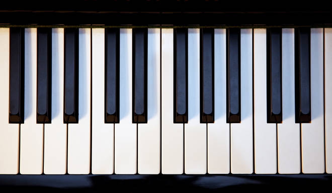

Here are some of my sports-related hobbies!
None of these pictures are mine or of me
I've tried a lot of different sports since when I was young. I don't currently do any sports, but I've done swimming for a long time. I started when I was around 7 but then quit after the pandemic.My favorite strokes were butterfly and breaststroke!

I also really like skiing! I only get to ski 1 week out of the year, so I'm not the best, but I'd say I'm intermediate. I really like the speed and if you fall, it doesn't hurt. Skiing in lesser known passes is underrated.
I've tried a lot of sports throughout my childhood. Some of them I never seriously pursued, so I'm not as good at them as I am in other sports. I took some volleyball classes and have the general skills. I'm not the best at the team aspect of it though. Most of the sports I'm decent at (swim and ski) are very individual sports. I've also tried ice skating. It's really fun, except you can't really do anything competitive or seriously with it because I started at a later age. I can do a couple jumps though, so that's fun!

Some of my other hobbies are:
I've played piano for a long time. I've played it since I was 6. When I lived in Taiwan, I would have to walk to a studio in order to practice, but when I moved to the US, I got my own piano. I mostly like the performance aspect of it, I'm not very good at music theory or composing. I'm sure if tried I would be, but I just can't retain music theory. It goes in one ear and out the other. I just like playing songs that sound pretty to me. I usually like romantic or contemporary era composers. Right now I've been into Beethoven pieces. I like those really dark and dramatic songs, or dreamy ones, no in between.
